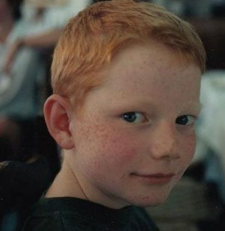
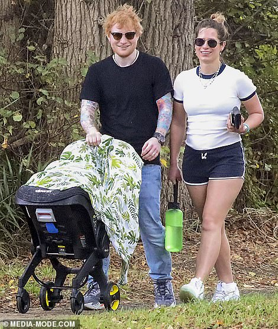

Ed Sheeran
An English singer and songwriter
Early Years
Ed Sheeran was born on February 17, 1991, in Halifax, West Yorkshire, in the United Kingdom. When he was young, he began playing guitar, showing early promise as a musical talent. When he was 11, Sheeran met singer-songwriter Damien Rice backstage at one of Rice’s shows, and the young musician found added inspiration. As the story goes, Rice told Sheeran to write his own music, and Sheeran set out the next day to do just that. English artist Ed Sheeran is a Grammy-winning singer/songwriter known for hit songs.
Musical style
Ed Sheeran's musical style has been described as pop folk-pop, and soft rock. Sheeran also incorporate rap into his music. Sheeran's earliest memories include listening to the records of Joni Mitchell, Bob Dylan and Elton John's Greatest Hits. According to Sheeran, the album that introduced him to music was Van Morrison's Irish Heartbeat. During his childhood his father took him to live concerts that would inspire his musical creations. These included seeing Eric Clapton at the Royal Albert Hall, Paul McCartney in Birmingham, and Bob Dylan. On the influence of Clapton, Sheeran states, "He's the reason I started playing guitar". He singled out Clapton's performance at the Party at the Palace in the grounds of Buckingham Palace, "I was eleven when I saw Eric Clapton play at the Queen's Golden Jubilee concert in June 2002. I remember him walking on stage with this rainbow-coloured Stratocaster and playing the first riff of 'Layla'. I was hooked. Two days later I bought a black Stratocaster copy for £30 that came with an amp. All I did for the next month was try to play that 'Layla' riff."
His current Life
In July 2015, Sheeran began a relationship with childhood friend and former secondary school classmate Cherry Seaborn. They announced their engagement in January 2018 and were married a year later. She is the inspiration of the song "Perfect". It was reported on 12 August 2020 that the couple were expecting their first child. On 1 September, Sheeran announced on Instagram that Seaborn had given birth to a baby girl the previous week On 19 May 2022, it was announced that the couple’s second child, a girl, was born.